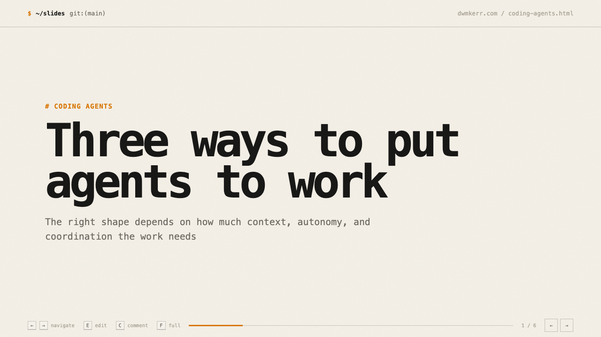
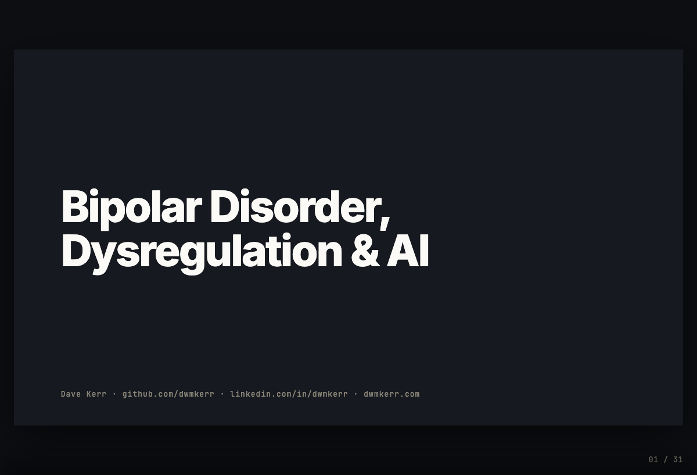

# slides for agents
Hand-built HTML decks that coding agents can create, present, edit, and save with you.
A short generated deck in the dwmkerr.com style. Use the arrow keys, press E to edit, or C to leave a comment when the local server is running.

OPEN INTERACTIVE DECK →Start with a strong information shape, then let the agent adapt the copy and details.
Terminal eyebrow, large statement, short subhead.
Narrative on one side, evidence or media on the other.
A sequence for timelines, methods, and operating models.
Distinct starting points for personal technical work, conference talks, and dark editorial presentations.
An unofficial approximation built only from publicly available visual material.
CONFERENCEProgressive reveals, speaker notes, fullscreen, and a phone-readable teleprompter.
DWMKERR.COMOff-white paper, terminal cues, mono type, and restrained amber.

# real-world deck
The hand-built conference mode grew out of a real public talk: progressive reveals, speaker notes, fullscreen, and a phone-readable teleprompter without a framework.